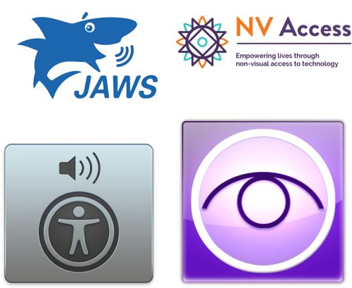
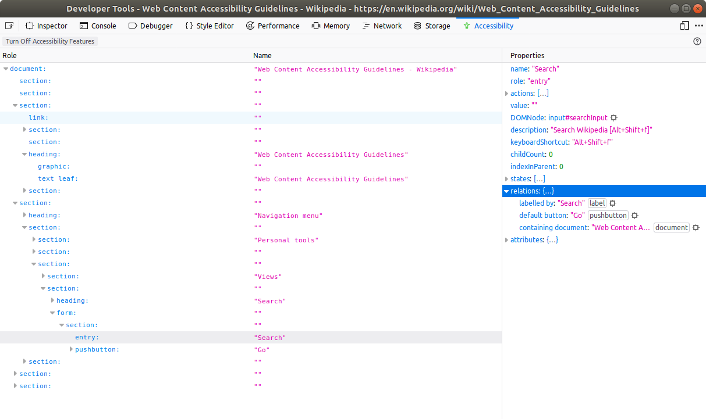
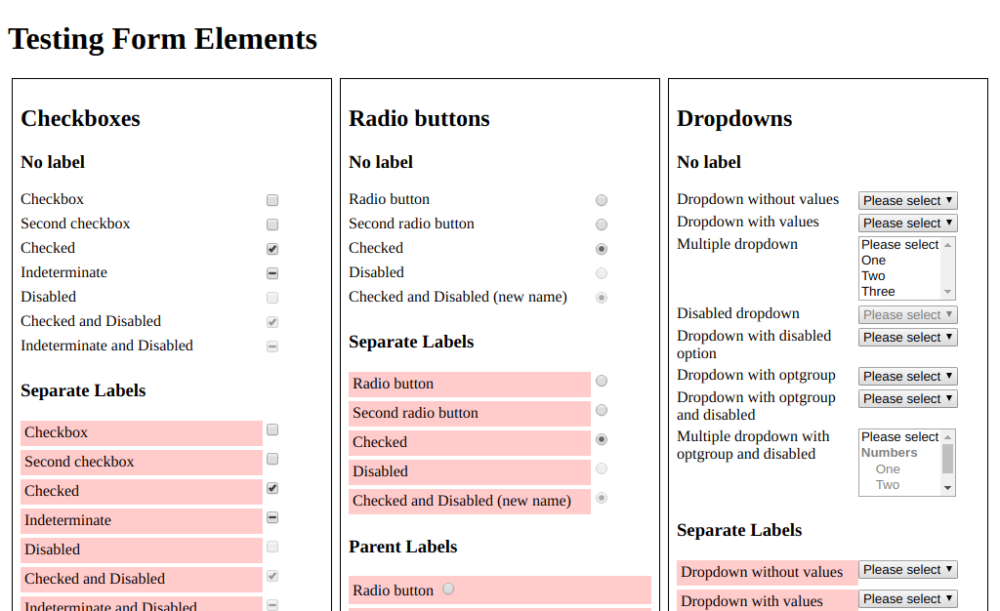

Web Content Accessibility Guidelines
WCAG 2.1 for QA
Topics
The state of disability
♿️
What is disability and how wide-spread is it?

UXPA International gave these stats:
1.3 billion people worldwide are affected by a disability.
A further 2.4 billion people are family or close friends of those affected.
That's 3.7 billion people out of 7.5 billion in the world (49.3%).
71% of customers with disabilities will leave a website if it's difficult to use.
That represents about 10% of total online spending.
| 👠Vision | 👂 Hearing | 🏃‍♂️ Mobility | 🗣 Speech | 🤷‍♂️ Cognitive | 🤯 Neural |
|---|---|---|---|---|---|
|
|
|
|
|
|
Introduction to WCAG
📑
What is WCAG and how does it work?
The WCAG are a large number of guidelines, most of which have exceptions.
Each guideline has one of three levels:
| 😒 Level A | 😃 Level AA | 😠Level AAA |
|---|---|---|
| Basic level of accessibility. | A reasonable standard. | Gold-standard. |

What the law says
👮‍♀️ 👮‍♂️
What is the law surrounding this topic?
European Union directive 2016/2102 says that the website and mobile applications for public sector bodies need to conform to WCAG 2.0 Level AA.
New websites must comply from 23 September 2019.
Old websites must comply from 23 September 2020.
Moblie applications must comply from 23 June 2021.
In January 2012 the Royal National Institute of the Blind (RNIB) started legal action against the low-cost airline Bmibaby because their website couldn't be used.
In January 2019, Beyoncé's Parkwood Entertainment was sued over website accessibility because it voilated the Americans With Disabilities Act (1990).
So there is legal precedent for this sort of thing.
Tools
🛠🧰
There are a few tools available.




Inputs
✍️
Form fields need some care and attention.
How are errors displayed?
It shouldn't just be a change in colour.
There should be error messages and they should be easy to understand.
Fields should be validated if you press enter in a text field.
Is the input labelled?
The label might not be visible but should be available to assistive technologies.
Due to acessibility concerns, we probably won't be styling these elements without being explicitly told to:
- Checkboxes
- Radio buttons
- Dropdowns *
- Scrollbars
* We might use something like Select2 for dropdowns since it offers a lot more features.
For checkboxes:
- Move between options with
tab/shift+tab - Toggle with
space. - Activating an indeterminate checkbox makes it checked.
For radio buttons:
tabgoes to the checked one.- Cursor keys change the value.

Widgets
🎰
Our widgets need to be accessible to all.
Our widgets shouldn't be limited to specific input mechanisms.
As well as mouse, our widgets should work with finger and keyboard.

Can I use the widget with the keyboard?
- Cursor keys usually navigate.
enterusually activates.escusually cancels.backspacesometimes goes to the previous step.
Can I tab past the widget?
If the widget has short-cut keys, then at least one of the following should be true:
- You can turn off the short-cut keys.
- You can remap them to one or more non-printable characters.
- They're only active while the widget is focussed.
If there's a pointer gesture, is there a corresponding button?
Same with a motion gesture.
Carousels suck for accessibility in general.
But if the carousel automatically plays, can you either hide it or pause it?
... on all devices?
If content appears on hover:
- Does it also appear on focus?
- If I trigger it on hover, can I move the mouse down to the content?
- Can I dismiss it without moving the mouse?
- Does it stay in place until the user dismisses it or it's no longer relevant?
Are hidden things actually hidden?
You shouldn't be able to focus on or inside any element that's hidden.
Screen readers shouldn't read out any of the hidden content.
Inner Sections
🧩
Any time we have to add something to an existing site / CMS content.
Is the tab order logical? It should be the same as the visual order.
You should be able to tell which element you're focussed on when tabbing. This might not be possible due to the site's existing styles.
Can link text be programmatically determined?
| 😕 | 🙂 |
|---|---|
| Click here | Click here to contact us |
| Find out more | Find out more about the SuperProduct 3000 |
| Buy now | Add the SuperProduct 3000 to your shopping cart |
The same goes for headings.
| 😕 | 🙂 |
|---|---|
| Page | Contact Us |
| Product | Acme SuperProduct 3000 |
If the page is only showing a single product, titles such as "Hardware" or "Drivers" can be understood from context.
Is there a text alternative?
All images should have an alt attribute, even if it's empty (decorative images).
Is text in a different language from the rest of the page marked using a lang attribute?
Is the lang value valid?
- Lower-case ISO2 language:
lang="ru". - Optional script subtag:
lang="ru-Cyrl". - Optional region subtag:
lang="ru-BY". - Maybe all three:
lang="ru-Cyrl-BY".
Web sites
🏞
There are more things to consider if we built the whole site.
Are there any landmark roles on the site?
<!-- Header, Logo etc. -->
<header role="banner"></header>
<!-- Primary navigation -->
<nav role="navigation"></nav>
<!-- Success/error alerts -->
<div role="alert"></div>
<!-- Hero - no role (assuming no <h1> in the hero) -->
<section></section>
<!-- Main content -->
<main role="main"></main>
<!-- Footer, copyright etc. -->
<footer role="contentinfo"></footer>
Can you skip repeated sections of the page, such as navigation?
Landmark roles allow assistive technologies to do this.
Skip-to-content links let the rest of us do it.
The link may be visually hidden - try pressing tab after a reload.
Is the navigation consistent?
Some pages may add to / expand the navigation, but the navigation should remain in the same place and the same order.
Can you work out wher you are from within a series of pages?
Is the distinction purely visible or has something like aria-current="page" or aria-current="step" been used?
You shouldn't lose functionality if you do these:
Zoom in to 200%.
Apply these styles to any block of text.
.any-text {
letter-spacing: 0.12em;
line-height: 1.5;
margin-bottom: 2em;
word-spacing: 0.16em;
}
There shouldn't be vertical and horizontal scrollbars.
Vertical content at 320 pixels shouldn't have a horizontal scrollbar.
Horizontal content at 256 pixels shouldn't have a vertical scrollbar.
If there is background audio that:
- is primarily foreground speech,
- is not audio for CAPTCHA and
- is not vocalisation as expression
then is at least one of these true?
- There are no background sounds
- The background sounds can be turned off.
- Background sounds are at lease 20 dB lower than the foreground.
Is the HTML valid?